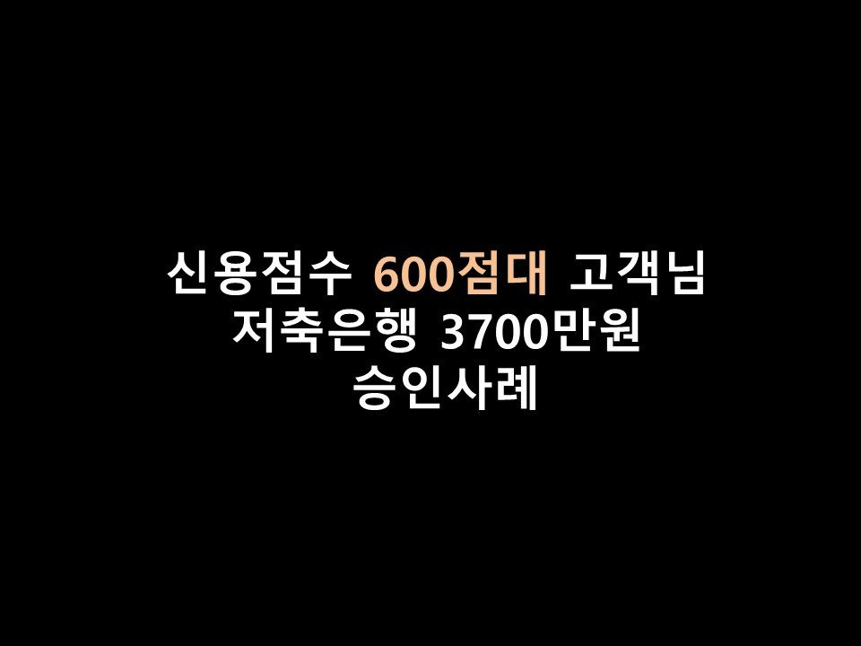
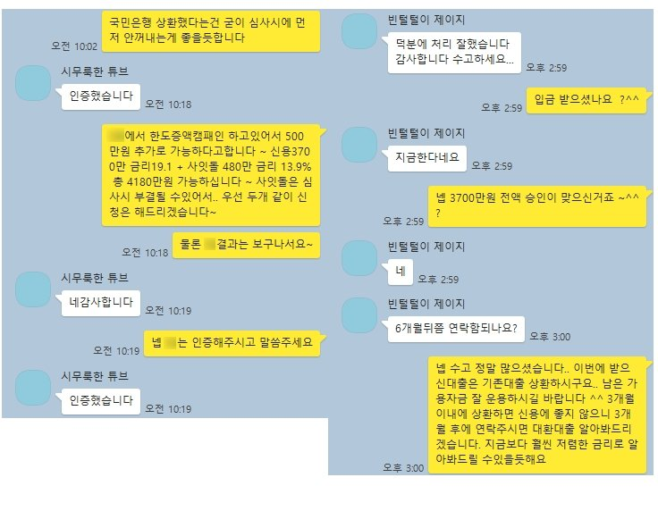

★신용점수 600점대 고객님 저축은행 3700만원 승인사례★

안녕하세요 ^^ 오늘은 신용점수 600점대 고객님의 저축은행 3000만원 승인사례를 소개해드리겠습니다~!
고객님께서는 현재 4대보험 가입된 직장에서 1년 4개월간 근무하셨으며, 연소득은 5570만원이었습니다.
신용점수는 올크레딧기준 500점대, 나이스기준 600점대로 많이 낮으신편이었습니다.
이용중이신 대출내역으로는 부산은행 300만, 현금서비스 400만, 농협은행 100만, 대부업 1800만원이었으며
특이사항으로는 최근 은행권대출 4000만원가량을 상환하신 이력이 있으셨습니다.
신용점수는 많이 낮으신 편이었지만, 현재 이용중이신 대출이 연소득의 1/2 가량으로 과다한 편이 아니시기에
2금융권으로 한도 나오실 수있을듯하여, 승인률 좋은 금융사로 한도 조회를 도움드리게 되었습니다~!
조회 결과 S저축은행에서 3700만원 금리 19.3%로 한도가 나오게 되어, 바로 진행요청을 드렸습니다~(대부업 대출이
있으셨기에 저금리로는 불가한 상황이었습니다.)
고객님께서는 이번에 S저축으로부터 받게되실 자금으로 기존대출을 모두 상환하시고, 남은자금은 필요한 곳에
사용하시겠다고 말씀을 주셨습니다 ^^.
그리하여 당일 진행결과 3700만원을 전액 온전히 승인 받으실 수있게 되었습니다~!
아래는 저와 고객님의 카톡상담내용의 일부입니다 ^^ 참고 부탁드립니다.
감사합니다~!
